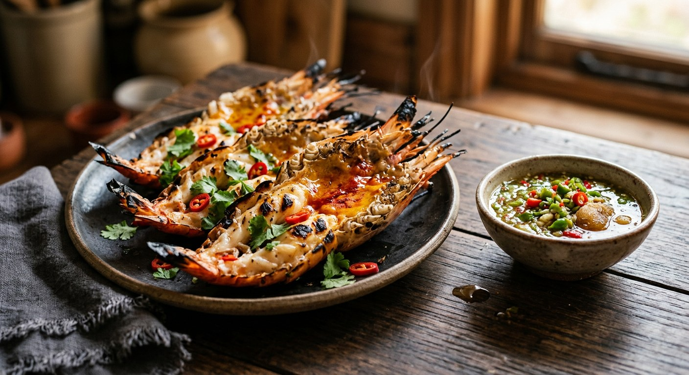

Giant river prawns split open and grilled over charcoal, their creamy head fat spooned out and returned mid-grill — then eaten, head first, with a chilli-lime seafood sauce.

กุ้งเผา is not just "grilled prawns" — it is the กุ้งแม่น้ำ, the giant freshwater prawn, and its head fat. Aow Takiab Seafood in Hua Hin explains the naming: river prawn and กุ้งก้ามกราม are the same animal, wild against farmed, and the wild ones from the Chao Phraya and Bang Pakong rivers grow bigger heads, longer claws and firmer flesh. The prize inside is มันกุ้ง, the creamy orange tomalley — the reason Wongnai's cook OPORRY. tells you to pick prawns whose head fat is "มันเยิ้ม" (creamy), never hard.
The technique is a ritual of rescue. The prawn is split open from the belly with one firm stroke of a sharp knife — Aow Takiab's chef warns that sawing back and forth turns the meat to mush — the vein and the black sac behind the head are pulled out, and then the tomalley itself is spooned out and set aside. It goes back on only in the final moments over the coals, because left on from the start it would dry out; Aow Takiab's rule is thirty seconds before done, TrueID's cook returns it when the flesh tightens, and Aroifin's version lets it bubble back to life under the lid.
Nothing else goes near the prawn. No marinade, no oil — the flavour comes from the shell, the smoke and the sauce. Kapook calls the น้ำจิ้มซีฟู้ด dipping sauce "ขาดไม่ได้" for the dish: chillies, garlic, coriander root, fish sauce and lime, blended cold — though every kitchen keeps its own balance, as the disagreements below show. At the table the prawn head is not garnish: Aow Takiab's crew spoons the hot tomalley over rice and dips the springy flesh in the sauce. Aroifin's nutritionists put the whole plate at about 1,050 kcal for four people, and 205 grams of protein.
| Thai | English | Amount |
|---|---|---|
| กุ้งแม่น้ำ | Giant river prawns | 3 (2 per 1 kg) |
| พริกขี้หนูสวน | Bird's eye chillies | 150 g |
| รากผักชี | Coriander roots | 15 roots |
| กระเทียมจีน | Chinese garlic | 100 g |
| น้ำตาลทราย | White sugar | ½ cup |
| น้ำมะนาว | Lime juice | 1½ cups |
| น้ำตาลปี๊บ | Palm sugar | 100 g |
| น้ำปลา | Fish sauce | 1½ cups |
The home batch (Aroifin): 1 kg of river prawns with a small sauce — 3 red chillies, 7–8 bird's eye chillies, 10 garlic cloves, 1 tsp salt, 3 tbsp fish sauce, 2 tsp sugar and 3 tbsp lime juice — 10 minutes prep, 15 minutes over medium coals under a lid; 1,050 kcal for four, 205 g protein. The green sauce (TrueID, บ้านอาชีพกู๋เล็ก): 85 g green bird's eye chillies blended with 250 g syrup, 25 g salt, 200 g lime juice, 20 g coriander root and 65 g garlic — sharp, green, and no fish sauce at all. The basil version (Kapook): the same sauce with sliced Thai basil added, boiled and bottled hot — lime juice squeezed in only at serving — to keep in the freezer for a month.
Split or whole. ครัวคุณต๋อย, TrueID, Aroifin and Aow Takiab all butterfly the prawn — split from the belly, cleaned, opened flat so it cooks evenly. Wongnai's OPORRY. grills the prawns whole, exactly as the market stalls do, shell sealing in the steam. The split is the restaurant method; the whole prawn is the street one.
When the tomalley returns. All the splitters remove the head fat first, but they disagree on timing: TrueID returns it "when the flesh tightens", Aroifin "when nearly done", Aow Takiab exactly thirty seconds before the end, or it dries out. OPORRY. never removes it at all — just picks prawns whose fat is creamy rather than hard.
The heat. OPORRY. wants a fairly strong fire and a short cook, off the coals the moment the shell turns orange. Aroifin and Khun Toi use medium charcoal, Aow Takiab goes low-to-medium — prawns cook fast, and long grilling dries the meat. The one shared rule: under a lid, and never long.
The sauce. ครัวคุณต๋อย's batch is sweet-leaning: 150 g chillies, 15 coriander roots, 100 g garlic, half a cup of white sugar, 100 g palm sugar, a cup and a half each of lime juice and fish sauce. TrueID's is sharp and green — 85 g green chillies, syrup, salt and lime, no fish sauce. Aroifin's home version is the smallest, with red and bird's eye chillies together. Kapook adds Thai basil and turns the sauce into a make-ahead bottle. Same name, four different sauces.
Where it cooks. Charcoal is the default — Khun Toi and OPORRY. — but Aow Takiab, feeding hotel guests rather than market crowds, says a covered pan over low-to-medium heat gets the same springy flesh, and TrueID's home version never lights a fire at all.
This recipe is translated from the following Thai-language sources. Where they disagree, we've said so.
1. ครัวคุณต๋อย (Khun Toi TV, recipe from ร้านปลา 3 น้ำ) — "กุ้งแม่น้ำเผา" (the recipe used here) — kruakhuntoi.com
2. TrueID Food (บ้านอาชีพกู๋เล็ก) — "วิธีทำกุ้งแม่น้ำเผา มันเยิ้ม เนื้อเด้งสุกพอดี สีสวย อร่อยเหมือนกินที่ร้าน" (the butterfly cut and green sauce) — food.trueid.net
3. Aroifin — "วิธีทำ กุ้งแม่น้ำเผา หอมมัน เนื้อแน่น อร่อยเหมือนร้านดัง" (the home batch and nutrition figures) — aroifin.com
4. อ่าวตะเกียบซีฟู้ด (Aow Takiab Seafood, Hua Hin) — "กุ้งแม่น้ำเผา ทำอย่างไรให้เนื้อเด้ง มันเยิ้ม" (the knife, timing and freshness rules) — aowtakiabseafood.com
5. Wongnai (OPORRY.) — "กุ้งเผามันเยิ้มๆๆๆ" (the whole-prawn market method) — wongnai.com
6. Kapook — "สูตรน้ำจิ้มซีฟู้ดกุ้งเผา จิ้มแซ่บหอมโหระพาพ่วงวิธีเก็บน้ำจิ้มซีฟู้ด" (the basil sauce and storage method) — cooking.kapook.com